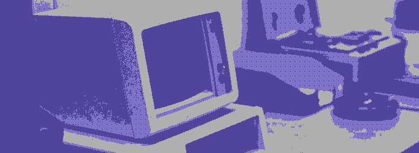

run inicio.exe
Utilización de software libre con fines prácticos
> Luchando contra la obsolescencia programada,
una compu por vez.
> El uso de la tecnología no es neutral.
.,,uod8B8bou,,. ..,uod8BBBBBBBBBBBBBBBBRPFT?l!i:. ,=m8BBBBBBBBBBBBBBBRPFT?!|||||||||||||| !...:!TVBBBRPFT||||||||||!!^^""' |||| !.......:!?|||||!!^^""' |||| !.........|||| |||| !.........|||| ## |||| !.........|||| |||| !.........|||| |||| !.........|||| |||| !.........|||| |||| `.........|||| ,|||| .;.......|||| _.-!!||||| .,uodWBBBBb.....|||| _.-!!|||||||||!:' !YBBBBBBBBBBBBBBb..!|||:..-!!|||||||!iof68BBBBBb.... !..YBBBBBBBBBBBBBBb!!||||||||!iof68BBBBBBRPFT?!:: `. !....YBBBBBBBBBBBBBBbaaitf68BBBBBBRPFT?!::::::::: `. !......YBBBBBBBBBBBBBBBBBBBRPFT?!::::::;:!^"`;::: `. !........YBBBBBBBBBBRPFT?!::::::::::^''...::::::; iBBbo. `..........YBRPFT?!::::::::::::::::::::::::;iof68bo. WBBBBbo. `..........:::::::::::::::::::::::;iof688888888888b. `YBBBP^' `........::::::::::::::::;iof688888888888888888888b. ` `......:::::::::;iof688888888888888888888888888888b. `....:::;iof688888888888888888888888888888888899fT! `..::!8888888888888888888888888888888899fT|!^"' `' !!988888888888888888888888899fT|!^"' `!!8888888888888888899fT|!^"' `!988888888899fT|!^"' `!9899fT|!^"' `!^"'
═════ Quienes somos? ════════════════
Cybercirujas nace de las ganas que tenemos de trastear con aparatos electrónicos. Al principio fue simplemente un capricho para juntar compus viejas (bastante viejas) e instalarle esos antiguos juegos de DOS que tanto placer nos dieron.
Cybercirujas es un grupo de usuarios y usuarias organizadas que busca luchar contra la obsolescencia programada mediante la utilización de software libre. De esta manera, Cybercirujas es un espacio de promoción de utilización de software libre con fines prácticos: usamos estas tecnologías por convencimiento filosófico pero también por cuestiones técnicas. Los sistemas operativos basados en software libre son los adecuados para utilizar en aquellos equipos que se consideran como obsoletos.
